2026 Advanced Higher Biology marking instructions
Source: Scottish Qualifications Authority (SQA) / Qualifications Scotland. This is a StemInteract HTML companion, not an official HTML edition. Selectable text is supplied alongside original page images. Use the images or original PDF for equations, powers, fractions, vector notation, tables and diagrams; text extraction cannot fully preserve mathematical layout.
Jump to a question
PDF page 1
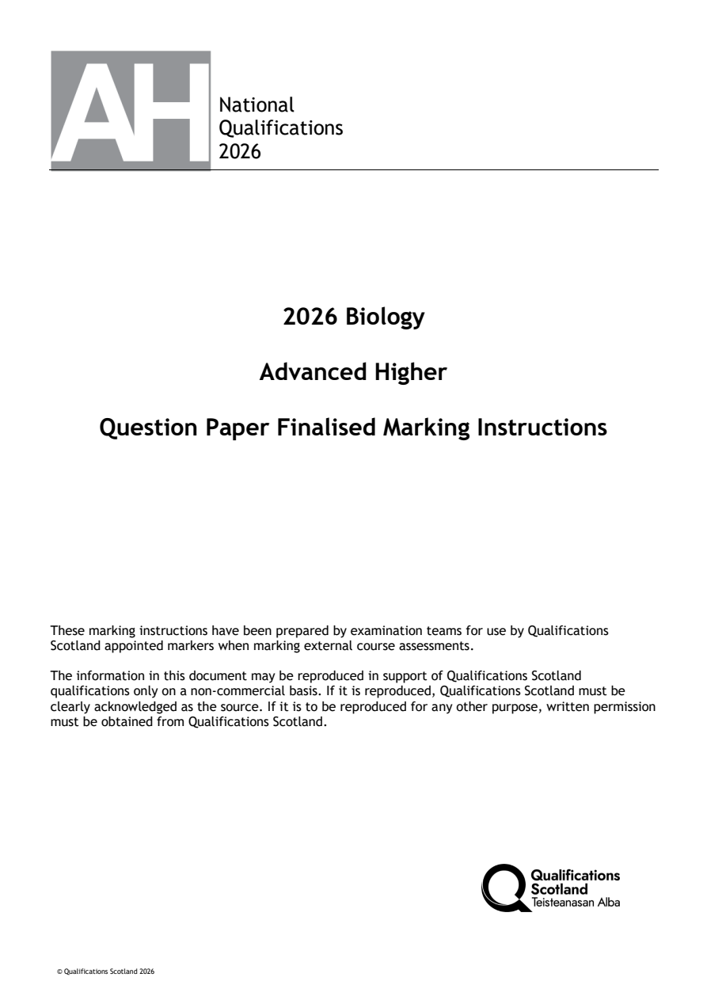
Selectable page text
National
Qualifications
2026
2026 Biology
Advanced Higher
Question Paper Finalised Marking Instructions
These marking instructions have been prepared by examination teams for use by Qualifications
Scotland appointed markers when marking external course assessments.
The information in this document may be reproduced in support of Qualifications Scotland
qualifications only on a non-commercial basis. If it is reproduced, Qualifications Scotland must be
clearly acknowledged as the source. If it is to be reproduced for any other purpose, written permission
must be obtained from Qualifications Scotland.
© Qualifications Scotland 2026PDF page 2
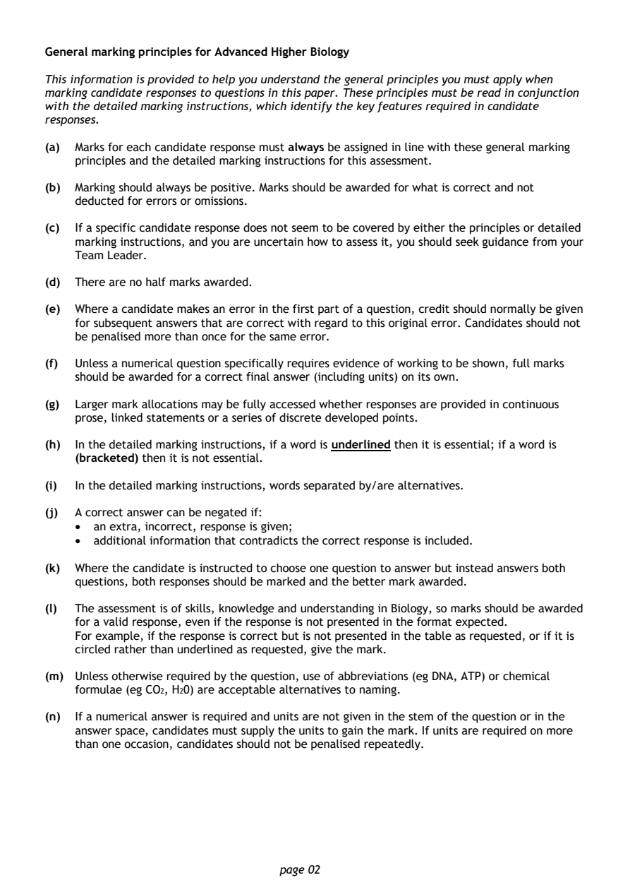
Selectable page text
General marking principles for Advanced Higher Biology
This information is provided to help you understand the general principles you must apply when
marking candidate responses to questions in this paper. These principles must be read in conjunction
with the detailed marking instructions, which identify the key features required in candidate
responses.
(a) Marks for each candidate response must always be assigned in line with these general marking
principles and the detailed marking instructions for this assessment.
(b) Marking should always be positive. Marks should be awarded for what is correct and not
deducted for errors or omissions.
(c) If a specific candidate response does not seem to be covered by either the principles or detailed
marking instructions, and you are uncertain how to assess it, you should seek guidance from your
Team Leader.
(d) There are no half marks awarded.
(e) Where a candidate makes an error in the first part of a question, credit should normally be given
for subsequent answers that are correct with regard to this original error. Candidates should not
be penalised more than once for the same error.
(f) Unless a numerical question specifically requires evidence of working to be shown, full marks
should be awarded for a correct final answer (including units) on its own.
(g) Larger mark allocations may be fully accessed whether responses are provided in continuous
prose, linked statements or a series of discrete developed points.
(h) In the detailed marking instructions, if a word is underlined then it is essential; if a word is
(bracketed) then it is not essential.
(i) In the detailed marking instructions, words separated by/are alternatives.
(j) A correct answer can be negated if:
• an extra, incorrect, response is given;
• additional information that contradicts the correct response is included.
(k) Where the candidate is instructed to choose one question to answer but instead answers both
questions, both responses should be marked and the better mark awarded.
(l) The assessment is of skills, knowledge and understanding in Biology, so marks should be awarded
for a valid response, even if the response is not presented in the format expected.
For example, if the response is correct but is not presented in the table as requested, or if it is
circled rather than underlined as requested, give the mark.
(m) Unless otherwise required by the question, use of abbreviations (eg DNA, ATP) or chemical
formulae (eg CO , H 0) are acceptable alternatives to naming.
2 2
(n) If a numerical answer is required and units are not given in the stem of the question or in the
answer space, candidates must supply the units to gain the mark. If units are required on more
than one occasion, candidates should not be penalised repeatedly.
page 02PDF page 3
Paper 1, Question 1Paper 1, Question 2Paper 1, Question 3Paper 1, Question 4Paper 1, Question 5Paper 1, Question 6Paper 1, Question 7Paper 1, Question 8Paper 1, Question 9Paper 1, Question 10Paper 1, Question 11Paper 1, Question 12Paper 1, Question 13Paper 1, Question 14Paper 1, Question 15Paper 1, Question 16Paper 1, Question 17Paper 1, Question 18Paper 1, Question 19Paper 1, Question 20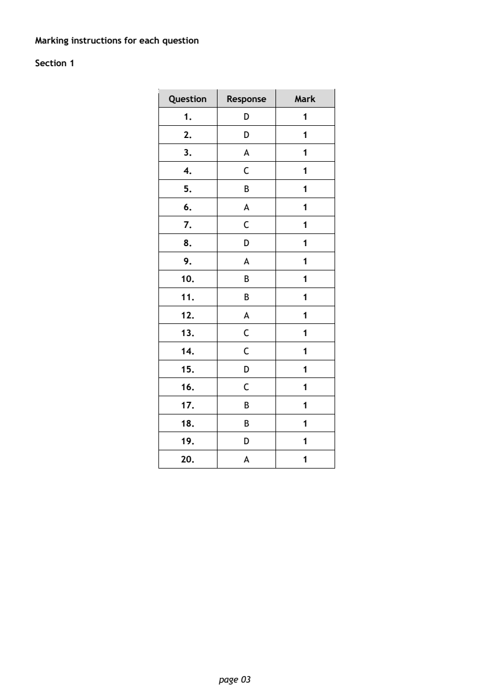
Selectable page text
Marking instructions for each question
Section 1
Question Response Mark
1. D 1
2. D 1
3. A 1
4. C 1
5. B 1
6. A 1
7. C 1
8. D 1
9. A 1
10. B 1
11. B 1
12. A 1
13. C 1
14. C 1
15. D 1
16. C 1
17. B 1
18. B 1
19. D 1
20. A 1
page 03PDF page 4
Paper 2, Question 1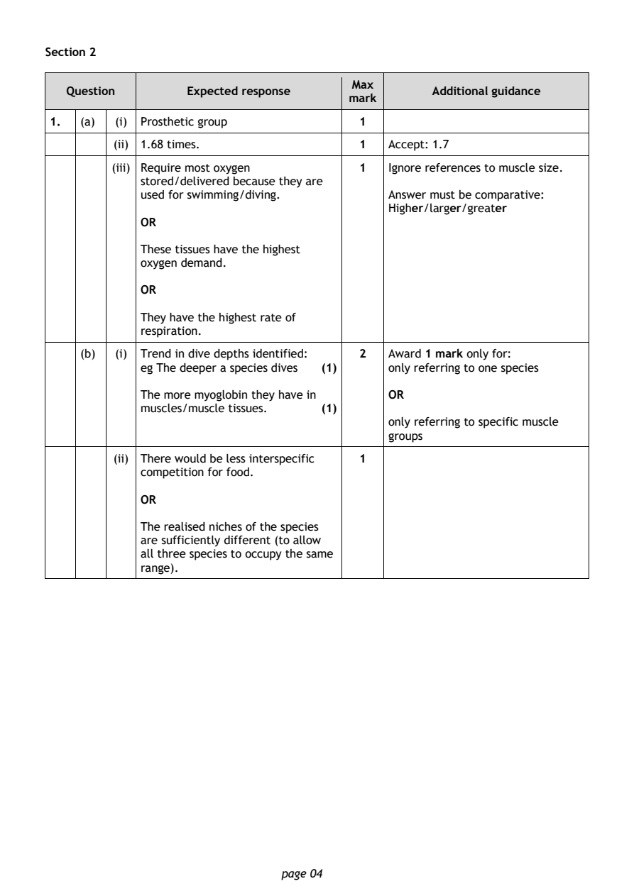
Selectable page text
Section 2
Max
Question Expected response Additional guidance
mark
1. (a) (i) Prosthetic group 1
(ii) 1.68 times. 1 Accept: 1.7
(iii) Require most oxygen 1 Ignore references to muscle size.
stored/delivered because they are
used for swimming/diving. Answer must be comparative:
Higher/larger/greater
OR
These tissues have the highest
oxygen demand.
OR
They have the highest rate of
respiration.
(b) (i) Trend in dive depths identified: 2 Award 1 mark only for:
eg The deeper a species dives (1) only referring to one species
The more myoglobin they have in OR
muscles/muscle tissues. (1)
only referring to specific muscle
groups
(ii) There would be less interspecific 1
competition for food.
OR
The realised niches of the species
are sufficiently different (to allow
all three species to occupy the same
range).
page 04PDF page 5
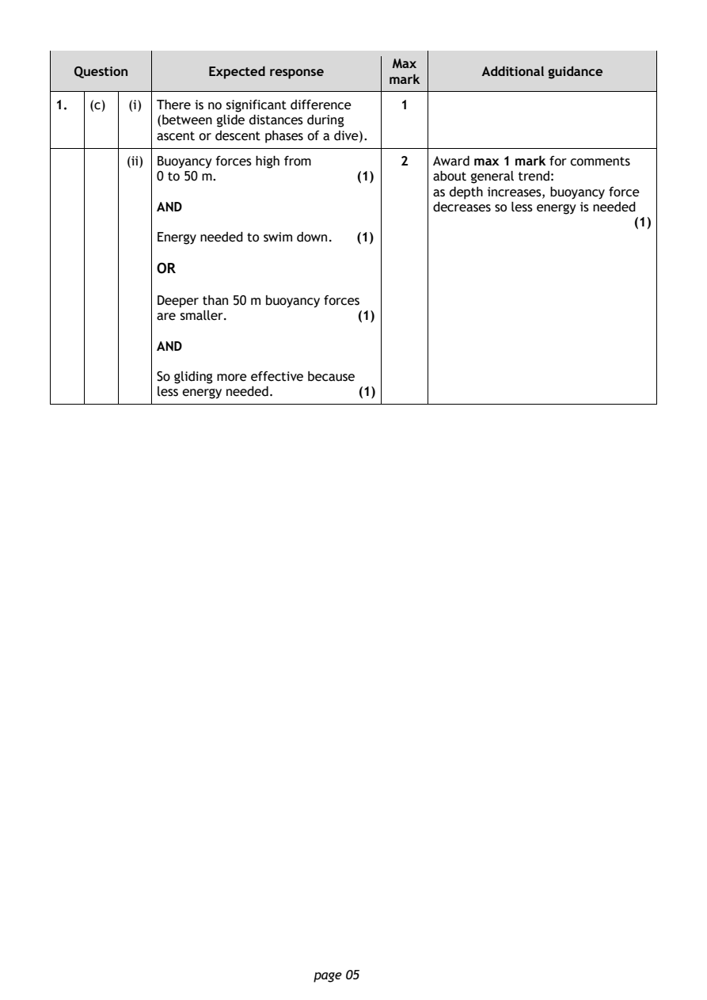
Selectable page text
Max
Question Expected response Additional guidance
mark
1. (c) (i) There is no significant difference 1
(between glide distances during
ascent or descent phases of a dive).
(ii) Buoyancy forces high from 2 Award max 1 mark for comments
0 to 50 m. (1) about general trend:
as depth increases, buoyancy force
AND decreases so less energy is needed
(1)
Energy needed to swim down. (1)
OR
Deeper than 50 m buoyancy forces
are smaller. (1)
AND
So gliding more effective because
less energy needed. (1)
page 05PDF page 6
Paper 2, Question 2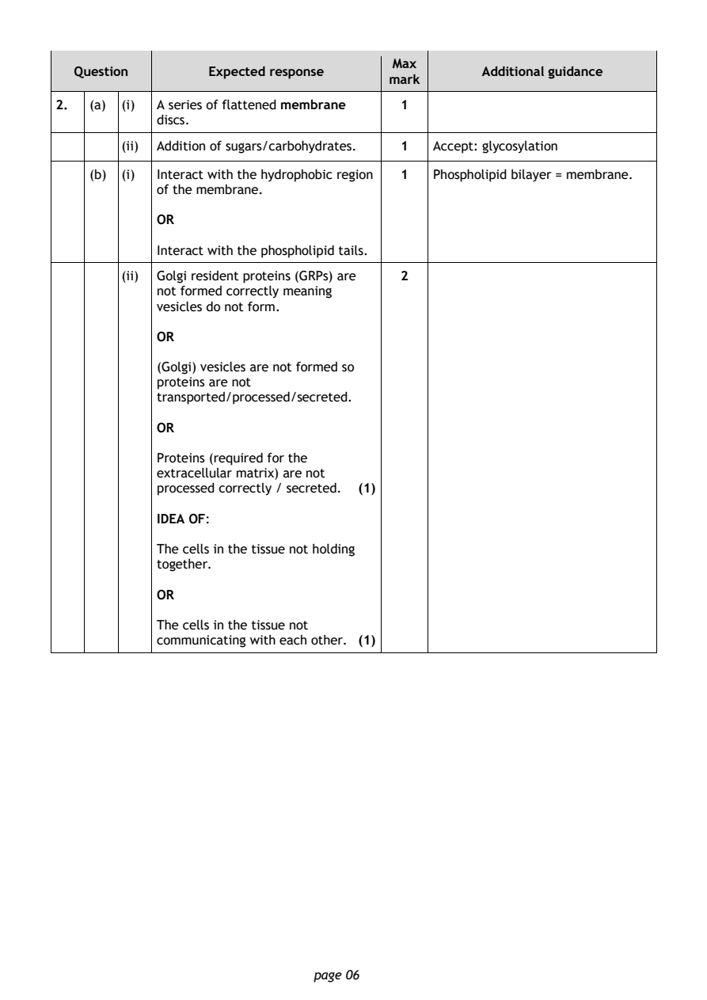
Selectable page text
Max
Question Expected response Additional guidance
mark
2. (a) (i) A series of flattened membrane 1
discs.
(ii) Addition of sugars/carbohydrates. 1 Accept: glycosylation
(b) (i) Interact with the hydrophobic region 1 Phospholipid bilayer = membrane.
of the membrane.
OR
Interact with the phospholipid tails.
(ii) Golgi resident proteins (GRPs) are 2
not formed correctly meaning
vesicles do not form.
OR
(Golgi) vesicles are not formed so
proteins are not
transported/processed/secreted.
OR
Proteins (required for the
extracellular matrix) are not
processed correctly / secreted. (1)
IDEA OF:
The cells in the tissue not holding
together.
OR
The cells in the tissue not
communicating with each other. (1)
page 06PDF page 7
Paper 2, Question 3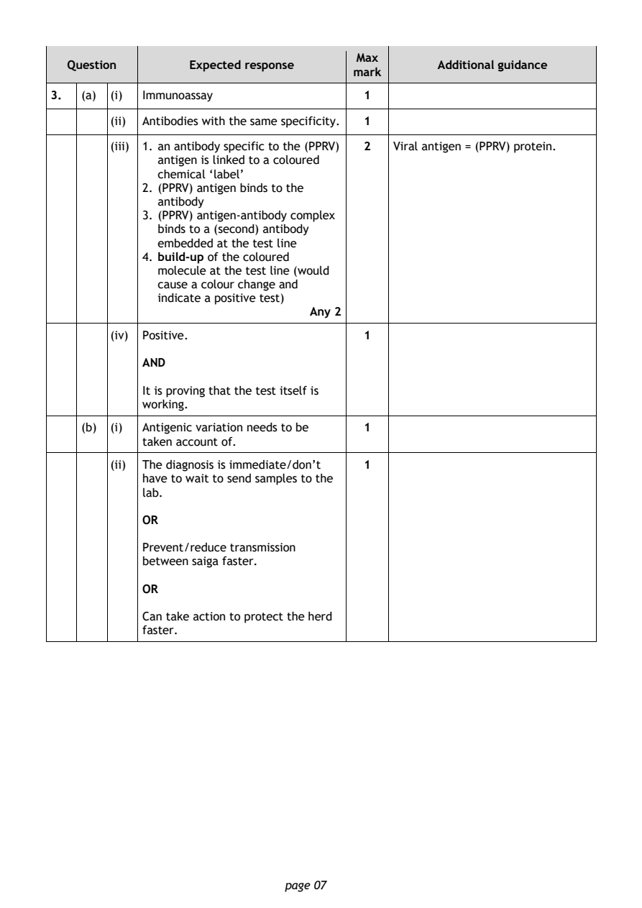
Selectable page text
Max
Question Expected response Additional guidance
mark
3. (a) (i) Immunoassay 1
(ii) Antibodies with the same specificity. 1
(iii) 1. an antibody specific to the (PPRV) 2 Viral antigen = (PPRV) protein.
antigen is linked to a coloured
chemical ‘label’
2. (PPRV) antigen binds to the
antibody
3. (PPRV) antigen-antibody complex
binds to a (second) antibody
embedded at the test line
4. build-up of the coloured
molecule at the test line (would
cause a colour change and
indicate a positive test)
Any 2
(iv) Positive. 1
AND
It is proving that the test itself is
working.
(b) (i) Antigenic variation needs to be 1
taken account of.
(ii) The diagnosis is immediate/don’t 1
have to wait to send samples to the
lab.
OR
Prevent/reduce transmission
between saiga faster.
OR
Can take action to protect the herd
faster.
page 07PDF page 8
Paper 2, Question 4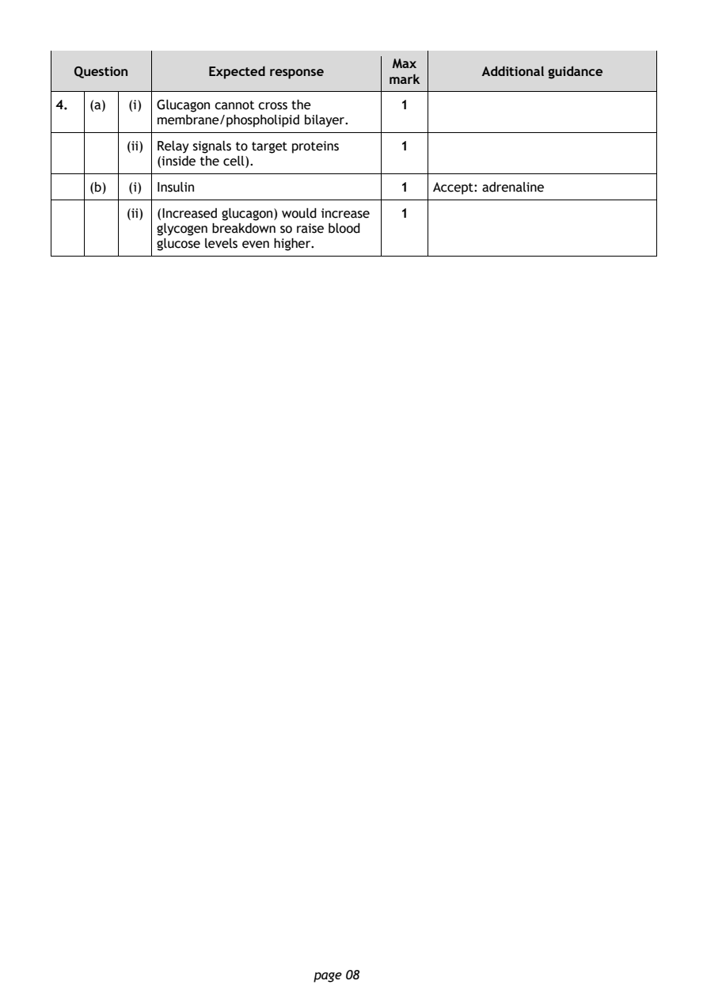
Selectable page text
Max
Question Expected response Additional guidance
mark
4. (a) (i) Glucagon cannot cross the 1
membrane/phospholipid bilayer.
(ii) Relay signals to target proteins 1
(inside the cell).
(b) (i) Insulin 1 Accept: adrenaline
(ii) (Increased glucagon) would increase 1
glycogen breakdown so raise blood
glucose levels even higher.
page 08PDF page 9
Paper 2, Question 5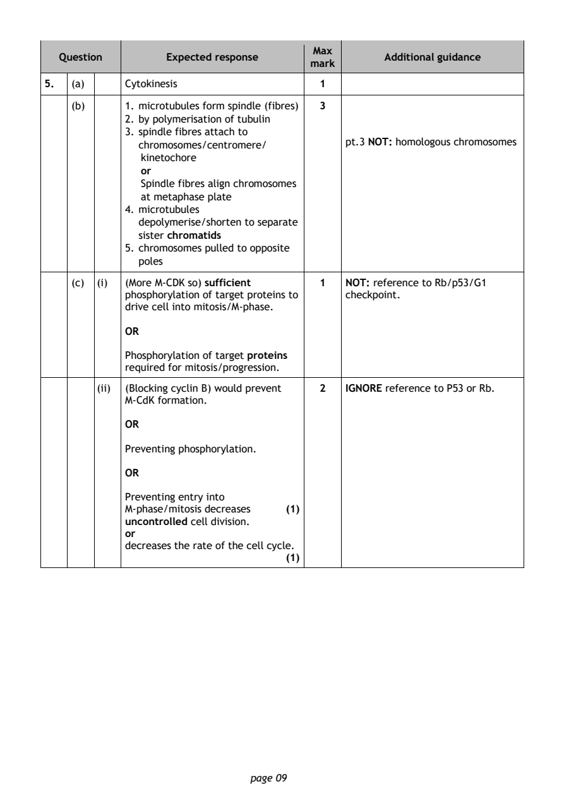
Selectable page text
Max
Question Expected response Additional guidance
mark
5. (a) Cytokinesis 1
(b) 1. microtubules form spindle (fibres) 3
2. by polymerisation of tubulin
3. spindle fibres attach to
chromosomes/centromere/ pt.3 NOT: homologous chromosomes
kinetochore
or
Spindle fibres align chromosomes
at metaphase plate
4. microtubules
depolymerise/shorten to separate
sister chromatids
5. chromosomes pulled to opposite
poles
(c) (i) (More M-CDK so) sufficient 1 NOT: reference to Rb/p53/G1
phosphorylation of target proteins to checkpoint.
drive cell into mitosis/M-phase.
OR
Phosphorylation of target proteins
required for mitosis/progression.
(ii) (Blocking cyclin B) would prevent 2 IGNORE reference to P53 or Rb.
M-CdK formation.
OR
Preventing phosphorylation.
OR
Preventing entry into
M-phase/mitosis decreases (1)
uncontrolled cell division.
or
decreases the rate of the cell cycle.
(1)
page 09PDF page 10
Paper 2, Question 6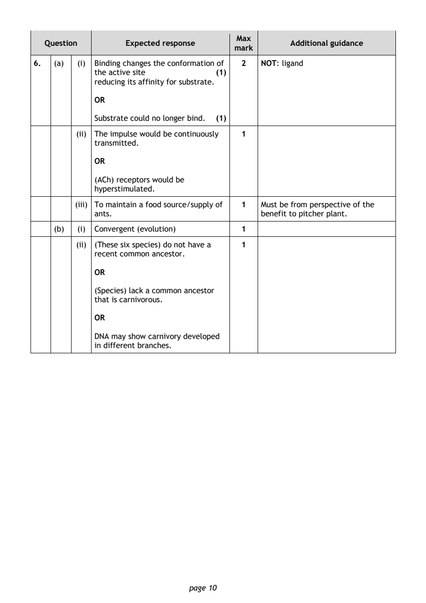
Selectable page text
Max
Question Expected response Additional guidance
mark
6. (a) (i) Binding changes the conformation of 2 NOT: ligand
the active site (1)
reducing its affinity for substrate.
OR
Substrate could no longer bind. (1)
(ii) The impulse would be continuously 1
transmitted.
OR
(ACh) receptors would be
hyperstimulated.
(iii) To maintain a food source/supply of 1 Must be from perspective of the
ants. benefit to pitcher plant.
(b) (i) Convergent (evolution) 1
(ii) (These six species) do not have a 1
recent common ancestor.
OR
(Species) lack a common ancestor
that is carnivorous.
OR
DNA may show carnivory developed
in different branches.
page 10PDF page 11
Paper 2, Question 7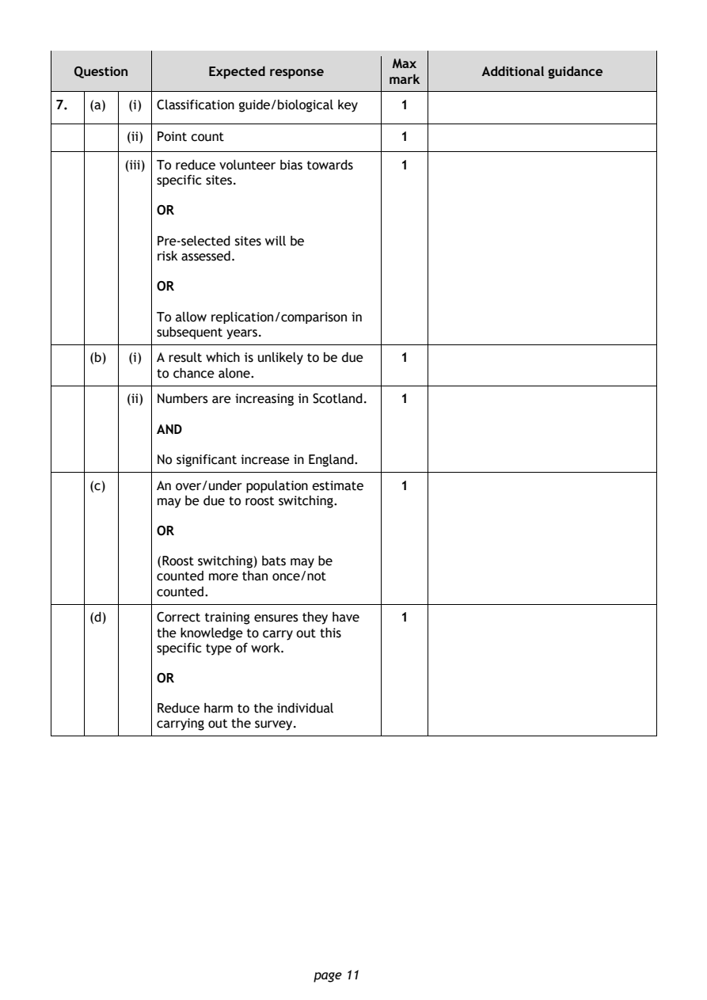
Selectable page text
Max
Question Expected response Additional guidance
mark
7. (a) (i) Classification guide/biological key 1
(ii) Point count 1
(iii) To reduce volunteer bias towards 1
specific sites.
OR
Pre-selected sites will be
risk assessed.
OR
To allow replication/comparison in
subsequent years.
(b) (i) A result which is unlikely to be due 1
to chance alone.
(ii) Numbers are increasing in Scotland. 1
AND
No significant increase in England.
(c) An over/under population estimate 1
may be due to roost switching.
OR
(Roost switching) bats may be
counted more than once/not
counted.
(d) Correct training ensures they have 1
the knowledge to carry out this
specific type of work.
OR
Reduce harm to the individual
carrying out the survey.
page 11PDF page 12
Paper 2, Question 8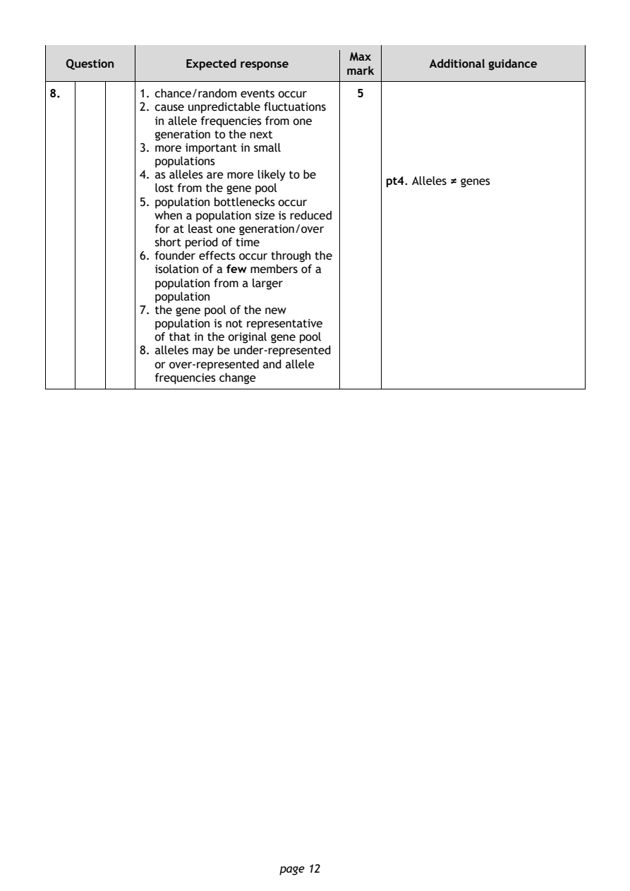
Selectable page text
Max
Question Expected response Additional guidance
mark
8. 1. chance/random events occur 5
2. cause unpredictable fluctuations
in allele frequencies from one
generation to the next
3. more important in small
populations
4. as alleles are more likely to be
pt4. Alleles ≠ genes
lost from the gene pool
5. population bottlenecks occur
when a population size is reduced
for at least one generation/over
short period of time
6. founder effects occur through the
isolation of a few members of a
population from a larger
population
7. the gene pool of the new
population is not representative
of that in the original gene pool
8. alleles may be under-represented
or over-represented and allele
frequencies change
page 12PDF page 13
Paper 2, Question 9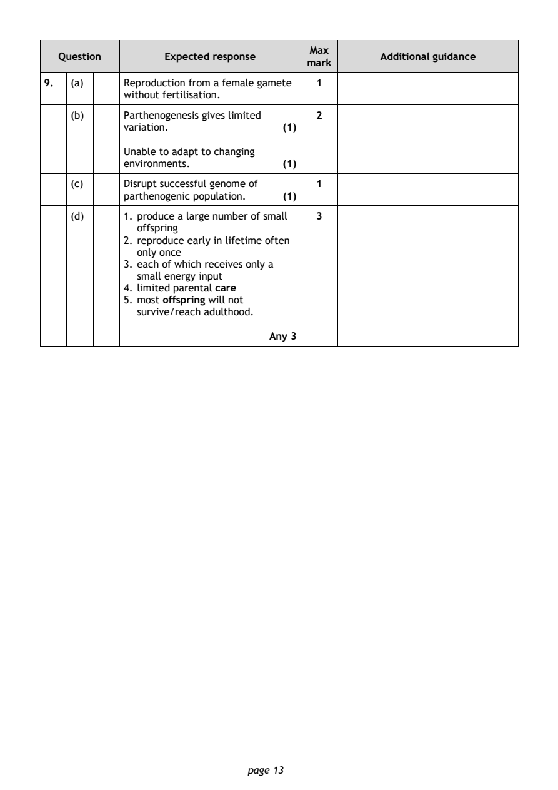
Selectable page text
Max
Question Expected response Additional guidance
mark
9. (a) Reproduction from a female gamete 1
without fertilisation.
(b) Parthenogenesis gives limited 2
variation. (1)
Unable to adapt to changing
environments. (1)
(c) Disrupt successful genome of 1
parthenogenic population. (1)
(d) 1. produce a large number of small 3
offspring
2. reproduce early in lifetime often
only once
3. each of which receives only a
small energy input
4. limited parental care
5. most offspring will not
survive/reach adulthood.
Any 3
page 13PDF page 14
Paper 2, Question 10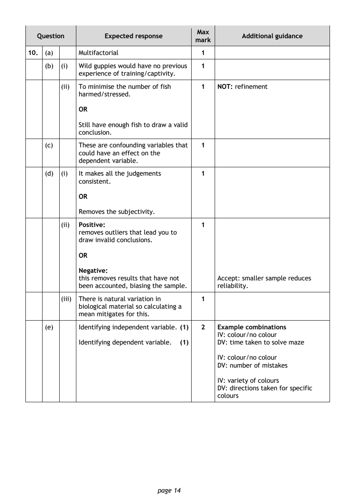
Selectable page text
Max
Question Expected response Additional guidance
mark
10. (a) Multifactorial 1
(b) (i) Wild guppies would have no previous 1
experience of training/captivity.
(ii) To minimise the number of fish 1 NOT: refinement
harmed/stressed.
OR
Still have enough fish to draw a valid
conclusion.
(c) These are confounding variables that 1
could have an effect on the
dependent variable.
(d) (i) It makes all the judgements 1
consistent.
OR
Removes the subjectivity.
(ii) Positive: 1
removes outliers that lead you to
draw invalid conclusions.
OR
Negative:
this removes results that have not Accept: smaller sample reduces
been accounted, biasing the sample. reliability.
(iii) There is natural variation in 1
biological material so calculating a
mean mitigates for this.
(e) Identifying independent variable. (1) 2 Example combinations
IV: colour/no colour
Identifying dependent variable. (1) DV: time taken to solve maze
IV: colour/no colour
DV: number of mistakes
IV: variety of colours
DV: directions taken for specific
colours
page 14PDF page 15
Paper 2, Question 11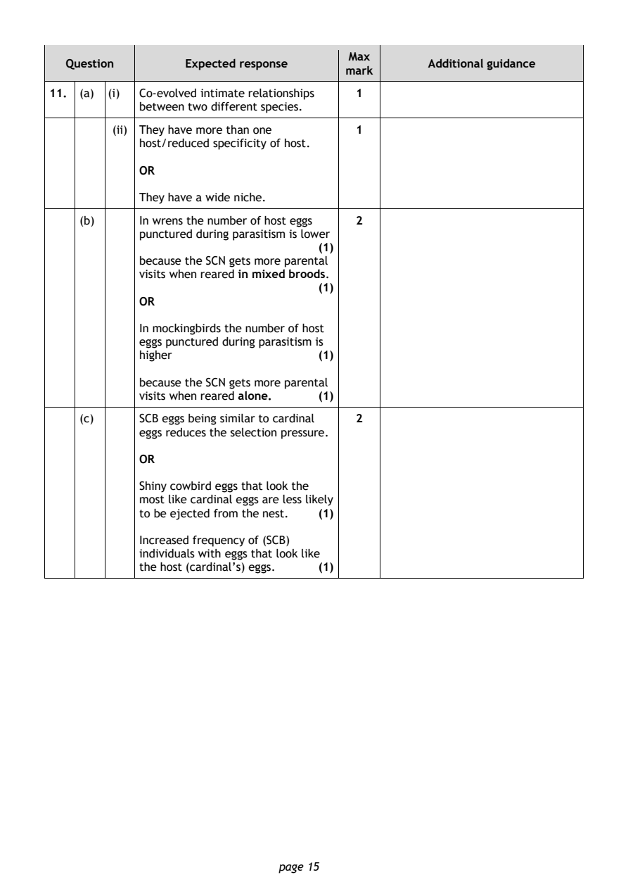
Selectable page text
Max
Question Expected response Additional guidance
mark
11. (a) (i) Co-evolved intimate relationships 1
between two different species.
(ii) They have more than one 1
host/reduced specificity of host.
OR
They have a wide niche.
(b) In wrens the number of host eggs 2
punctured during parasitism is lower
(1)
because the SCN gets more parental
visits when reared in mixed broods.
(1)
OR
In mockingbirds the number of host
eggs punctured during parasitism is
higher (1)
because the SCN gets more parental
visits when reared alone. (1)
(c) SCB eggs being similar to cardinal 2
eggs reduces the selection pressure.
OR
Shiny cowbird eggs that look the
most like cardinal eggs are less likely
to be ejected from the nest. (1)
Increased frequency of (SCB)
individuals with eggs that look like
the host (cardinal’s) eggs. (1)
page 15PDF page 16
Paper 2, Question 12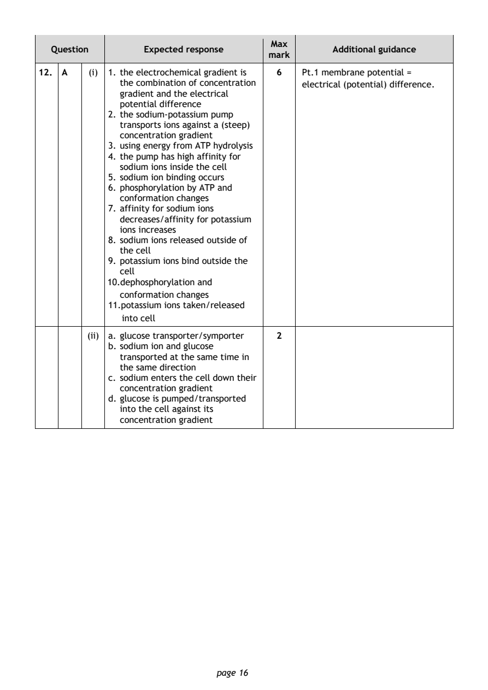
Selectable page text
Max
Question Expected response Additional guidance
mark
12. A (i) 1. the electrochemical gradient is 6 Pt.1 membrane potential =
the combination of concentration electrical (potential) difference.
gradient and the electrical
potential difference
2. the sodium-potassium pump
transports ions against a (steep)
concentration gradient
3. using energy from ATP hydrolysis
4. the pump has high affinity for
sodium ions inside the cell
5. sodium ion binding occurs
6. phosphorylation by ATP and
conformation changes
7. affinity for sodium ions
decreases/affinity for potassium
ions increases
8. sodium ions released outside of
the cell
9. potassium ions bind outside the
cell
10.dephosphorylation and
conformation changes
11.potassium ions taken/released
into cell
(ii) a. glucose transporter/symporter 2
b. sodium ion and glucose
transported at the same time in
the same direction
c. sodium enters the cell down their
concentration gradient
d. glucose is pumped/transported
into the cell against its
concentration gradient
page 16PDF page 17
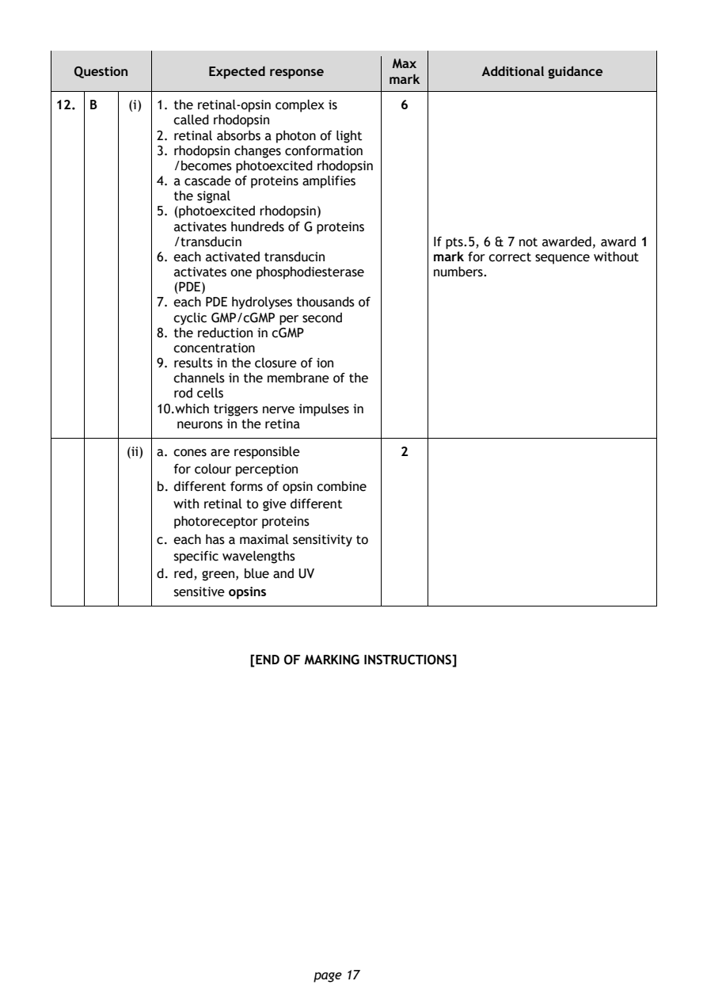
Selectable page text
Max
Question Expected response Additional guidance
mark
12. B (i) 1. the retinal-opsin complex is 6
called rhodopsin
2. retinal absorbs a photon of light
3. rhodopsin changes conformation
/becomes photoexcited rhodopsin
4. a cascade of proteins amplifies
the signal
5. (photoexcited rhodopsin)
activates hundreds of G proteins
/transducin If pts.5, 6 & 7 not awarded, award 1
6. each activated transducin mark for correct sequence without
activates one phosphodiesterase numbers.
(PDE)
7. each PDE hydrolyses thousands of
cyclic GMP/cGMP per second
8. the reduction in cGMP
concentration
9. results in the closure of ion
channels in the membrane of the
rod cells
10.which triggers nerve impulses in
neurons in the retina
(ii) a. cones are responsible 2
for colour perception
b. different forms of opsin combine
with retinal to give different
photoreceptor proteins
c. each has a maximal sensitivity to
specific wavelengths
d. red, green, blue and UV
sensitive opsins
[END OF MARKING INSTRUCTIONS]
page 17